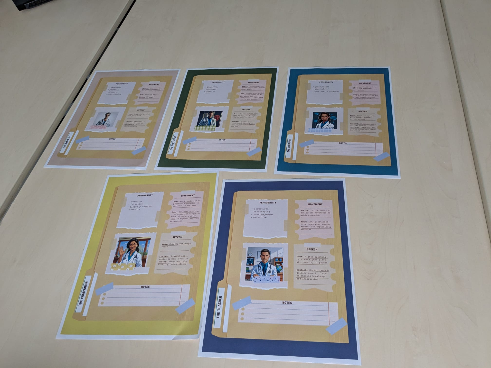
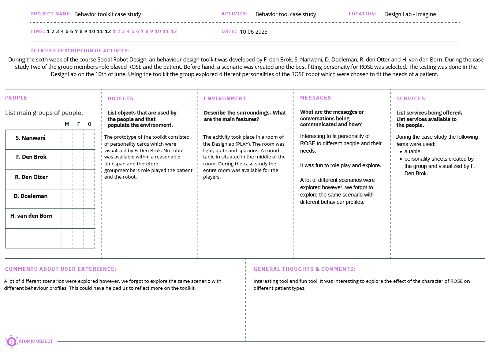
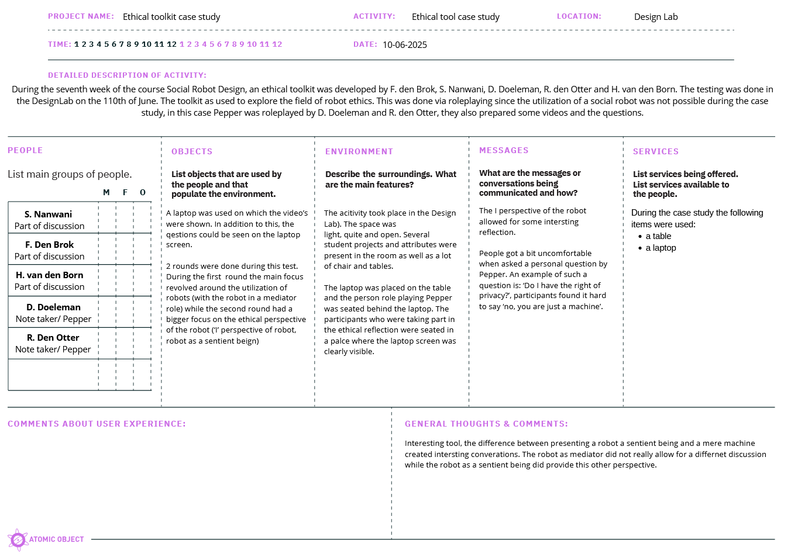

Week 8
During this week’s project meeting, a case study was conducted to test the created behavior- and ethical toolkits.
Toolkit 4: Behavioral toolkit
During the sixth week of this course, a behavioral toolkit was created by my group and I 1. To test this toolkit, a total of five character sheets were physicalized by F. den Brok:

Personality sheets were physicalized by F. den Brok.
To test this toolkit, we took inspiration from the theater-style type of exploration as shown during multiple lectures. A total of three group members took part in the role-playing; the other two group members watched and took on the roles of observer and notetaker. The toolkit was tested during the following scenario:
- ROSE is a care robot that is being utilized in an elderly care home. In this elderly care home, the patients need personalized care. A caregiver who knows the patients chooses the fitting personality type for ROSE and after this, ROSE is ready to help the patients.
Below, a video of two of the runs can be found. The first patient was a grumpy old man who only wanted to take blue pills. Unfortunately, his pills are not blue. The caregiver selected the protector personality for ROSE since the patient needs clear communication and a firm hand. During the second scenario, ROSE encounters an old lady who is roaming around the halls of the care home. Unsure how to get back to the living room, she accepts the assistance of ROSE who is programmed as an empath.
The video above was published with the consent of the people who were filmed. However, to protect their privacy online, the roles POEMS framework below are not specified. This is to ensure that the names of the people visible in the video are not directly linkable to their image.

POEMS framework 2 behavioral toolkit case study.
Insights after testing
The behavioral toolkit allowed us to explore the influence of different personalities of ROSE. The theater approach, as often mentioned during the lectures, also allowed for fun and open-ended exploration. It was concluded that the customization of ROSE can be helpful to ensure that elderly patients feel safe and receive the care that they need. One thing we did not do during the case study was review the same scenario with different personality types. Currently, we only explored personality types that we deemed to be the best fit to the scenario's. It would have been interesting to see how the scenarios would have played out when ROSE is programmed differently.
Tookit 5: Ethical toolkit
During the seventh week an ethical toolkit was created by my group and I 1. This toolkit was also tested on 10-07-2025 in Design Lab. Two of my group members (D. Doeleman and R. Den Otter) prepared the content of the conversation. Just like the behavioral toolkit, this toolkit was also tested via role playing. The two earlier mentioned group members play Pepper who showed videos on his tables. R. Den Otter created a scenario in which Pepper had the role of mediator, while D. Doeleman created a scenario in which Pepper presented himself as a sentient being.

POEMS framework 2 ethical toolkit case study.
Insights after testing
This toolkit provided a really fun and interesting conversation. A clear difference was found between Pepper as a mediator and Pepper presented as a sentient being. During the round in which Pepper functioned more as a mediator, the benefit of using Pepper was the novelty and the utilization of the screen of Pepper. However, during the round in which Pepper functioned as a sentient being, slightly more interesting results were found. When Pepper asked personal questions such as: 'Do I have the right to privacy?', 'Why can people just beat me up?' and 'Am I just a tool for you guys?' the group had a hard time answering these questions. The group felt a sense of compassion and sometimes awkwardness, not sure how to express their belief that Pepper is a mere machine instead of a sentient being.
The exploration of Pepper as a sentient being provided an ethical enrichment. The almost absurdity of discussion ethics with a machine pretending to have feelings and also believing it helped to explore the awkwardness of robot ethics. In addition to this, it showed themes from different perspectives. Themes such as sustainability ('Will you just throw me away after I am broken?'), robots in health care ('Do you think I am capable of providing emotional support to someone?)? Can I cry with them? Be happy for them?') Or societal issues (Why do you use my body to harm others?) can be meaningfully explored in an out-of-the-box way!
The utilization of Pepper as a sentient being reminded me of the cases of robot anthropomorphism that were discussed during the lectures. I already elaborated upon this during the reflection which I added during week 7. The uneasiness with robot mishandling, which was identified by Anthis et al. 3 could be clearly seen during this case study. The presentation of Pepper as a sentient being and the reaction of the people partaking in the discussion were also not fully unexpected. Earlier in this course we discussed the emotional bond between people and their robotic pet 4. People are able to create strong bonds with robots (reminds me of the movie HER on which I reflected in the reflection of week 1) and the exploration of this bond in combination with ethics proved to be successful!
-
F. den Brok, S. Nanwani, D. Doeleman, R. den Otter, H. van den Born ↩↩
-
‘POEMS – Research Tool - Nova’. Accessed: May 25th 2025. [Online]. Available at: https://novatools.org/poems-research-tool/ ↩↩
-
J. R. Anthis, J. V. T. Pauketat, A. Ladak, en A. Manoli, ‘Perceptions of Sentient AI and Other Digital Minds: Evidence from the AI, Morality, and Sentience (AIMS) Survey’, in Proceedings of the 2025 CHI Conference on Human Factors in Computing Systems, Yokohama Japan: ACM, apr. 2025, pp. 1-22. doi: 10.1145/3706598.3713329. ↩
-
‘Beloved Robot Dogs Honored in Funeral Cerenomy, National Georgraphic, YouTube’. Accessed: June 9th 2025. [Online]. Available at: https://www.youtube.com/watch?v=85737zfBWXw ↩